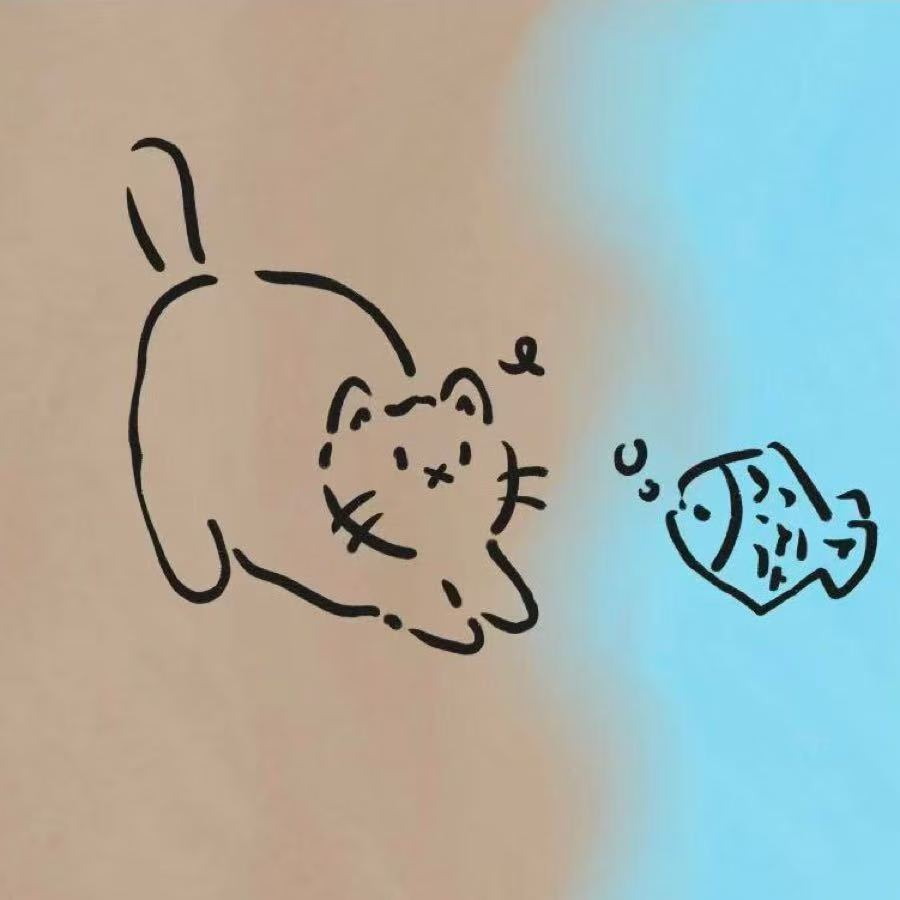
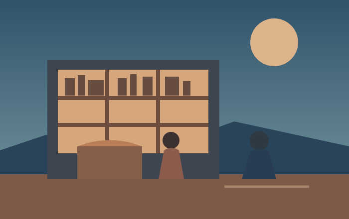
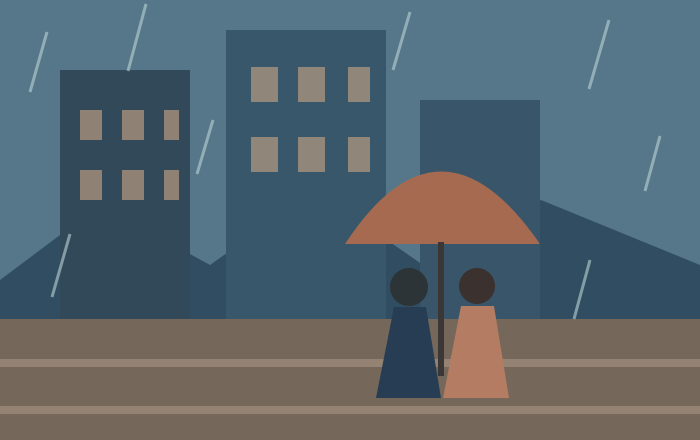
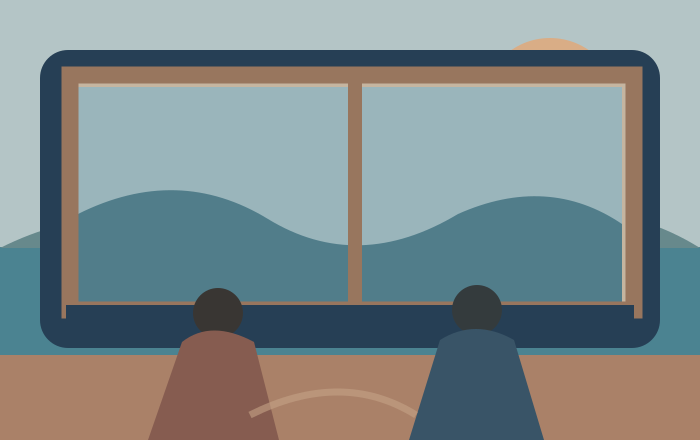
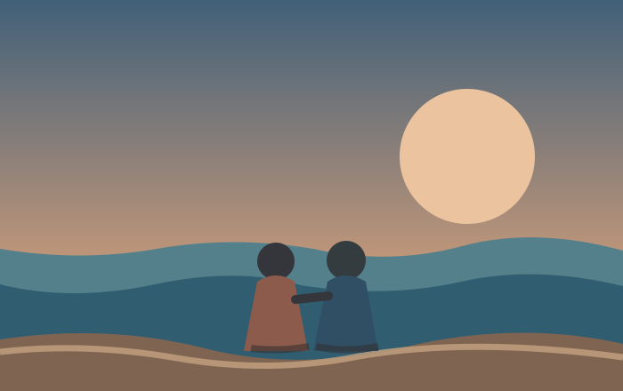

A STORY IN MOTION · 故事示例
有些相遇，
像两条河终于汇合。
这是关于阿澄和予川的故事。沿着江水向左滑，去看那些平凡又闪亮的瞬间。
← 向左滑动，故事开始

01 · 两条平行线
同一座城市，
不同的日常。
阿澄常在街角的书店消磨午后；予川总从那条街匆匆经过。那时，他们还不知道彼此的名字。
阿澄的故事予川的故事


02 · 初次相遇
雨停之前，
我们聊了很久。
突然下起的雨，让两个人站在同一个屋檐下。从一本书开始，话题慢慢走到了很远的地方。
我们的故事
03 · 第一次远行
去看海，
也看看更远的我们。
清晨的列车一路向东。窗外的景色换了又换，他们终于有了第一张真正属于两个人的旅行照片。
我们的故事


04 · 此刻与以后
江水还在向前，
故事也是。
后来，他们走过许多地方，也学会珍惜寻常日子。下一段旅程，就从今天开始。
未完待续
THE STORY GOES ON
接下来的故事，
由我们继续写。
把照片与日期换成真实回忆，这条江就会成为属于你们的故事。